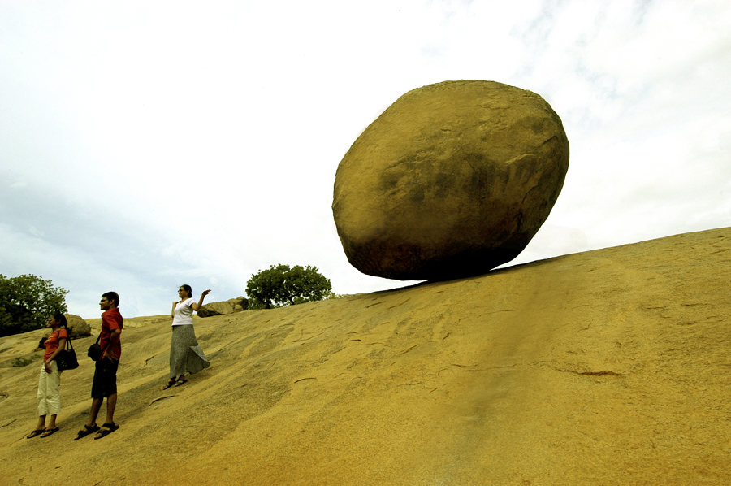

Krishna's Butterball
The Krishna butter ball is a huge boulder made of granite. This resides adjacent to the Arjuna penance. The unique feature of this huge boulder is it stands in a inclined surface and too slippery which defies all laws of physics and no one knows how this huge rock came to this precarious position. Some believes that it is the deposition of granite for a long time, but there also no proof for that fiction.This natural balanced rock attracts lot of tourists and myriad of photographs are taken around it.